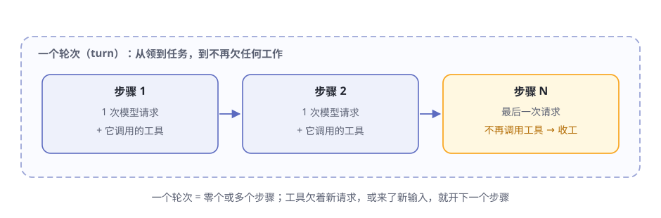
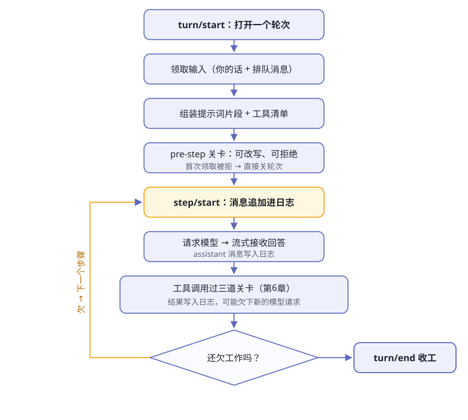

第5章 一次对话的完整旅程¶
阅读提示 第 2 章你看到了 agent 给出的答案。这一章打开黑盒：从你按下回车到答案出现，dsh 内部到底发生了什么。两个新词：轮次和步骤；一条铁律：模型可见即已记录。
轮次和步骤：一次对话的度量衡¶
先定义几个词。dsh 官方有一份术语表，给每个概念规定了唯一叫法，本书照抄（表5-1）。
表5-1 一次对话的度量衡
| 词 | 官方定义 | 大白话 |
|---|---|---|
| 轮次（turn） | 会话中一次对已接纳输入的排空过程，在模型及其工具停止工作或终止策略介入后结束 | 你说一句，它干一串，收工一次 |
| 步骤（step） | 一次模型请求，以及由模型响应引发的工具执行；一个轮次包含零个或多个步骤 | 一次"想 + 干" |
| Round | 承载一个轮次的外层策略迭代，例如一个 Goal Round 或一次全新尝试 | 轮次外面还套着的大循环 |

图5-1 轮次与步骤的关系
为什么这么分？因为"你问一句它答一句"只是最简单的情形。真实干活时，agent 常常要来回好几步：查一次文件、再跑一次命令、再改一处代码——每一下来回都是一个步骤、一次"想 + 干"，合起来才是一个完整的轮次（图5-1）。
特别记住轮次的开与关：它在领取首条输入之前打开，在不再欠下任何工作时关闭。"欠工作"三个字是本章主线的发动机，马上就会讲到。
Round 则是轮次外面的一层——比如 Goal Round 是"为当前目标接纳的一次续行周期"，会被同会话驱动器具体化为一个由目标触发的轮次；同一会话里无关的人类轮次不消耗它的上限。这个词第 7 章才用得到，现在只需知道：轮次外面可能还套着更大的循环。
一个轮次的完整流程¶
官方架构文档给出了轮次的时序（图5-2），后面两章的所有细节都挂在这条线上。

图5-2 一个轮次的完整流程
整张图可以压缩成八拍（表5-2）。
表5-2 轮次的八拍
| 拍 | 发生什么 | 备注 |
|---|---|---|
| 1 | turn/start |
打开一个轮次；这是持久事件，直接写入账本 |
| 2 | 领取输入 | 从收件箱取走：全部待处理的"下一步"输入 + 一条排队消息 |
| 3 | 组装弹药 | 插件注册的提示词片段与工具 schema，每个步骤都重新读一遍 |
| 4 | agent/pre-step 关卡 |
监听器可以改写已领取的消息，也可以直接拒绝 |
| 5 | step/start 先记账 |
进入步骤的消息以 user/message 追加进账本，然后才从账本派生出模型历史 |
| 6 | 请求模型 | agent/request → llm/stream → 流式碎片 assistant/chunk → 完整的 assistant/message |
| 7 | 执行工具 | 每个 tool/call 过三道关卡，结果以 tool/result 写回账本（第 6 章细讲） |
| 8 | 清欠 | 工具欠着新的请求，或来了新输入 → 领取、开下一个步骤；什么都不欠 → turn/end |
流程里有三个设计值得停下来。
第一，pre-step 关卡。 agent/pre-step 决定模型看到什么：监听器可以改写已领取的消息，也可以直接拒绝。首次领取被拒绝、或被改写为空时，系统仍会关闭一个不含步骤的持久轮次——什么都没干，但账本记下了"试过"。
第二，每步先记账。注意第 5 拍的顺序：你的消息先追加进账本，然后才从账本派生出给模型看的历史——"派生"只从这一本账里读。这个顺序就是本章铁律的落地方式。
第三，空回答也留痕。 assistant/message 会记录每一次成功的提供方调用，包括返回空内容或以 max-tokens 结束的调用。空内容不会进入派生历史，但该事件仍保留用量。模型答没答、答了什么，账本一笔不丢。
轮次关闭前的最后一道关卡是 serial 事件 agent/turn-stopping：有异议的监听器可以当场发起纠偏，机器重读收件箱再跑一个步骤；没人异议，才真正收工。官方的说法很酷：结果由数据决定，所以监听器的顺序改变不了结局。
两种事件：账本的和实时的¶
第 3 章讲过事件分三个域。站在本章时序的视角看，它们其实是两种（表5-3）——选错地方，是新手踩的第一个坑。
表5-3 两种事件域
| 类型 | 去向 | 生命周期 | 例子 | 什么时候用 |
|---|---|---|---|---|
| 会话事件（账本） | 追加进日志，并通过 session/event 广播 |
永久，重载后还在 | turn/* step/* user/message assistant/* tool/* |
这个事实必须在重载后仍然存在 |
| 实时事件（广播） | 直接发给监听器，不落账 | 只活在当下 | agent/* fs/* tools/* telemetry/* |
观察或拦截正在进行的工作 |
官方原话："turn/*、step/*、user/message、assistant/* 和 tool/* 是持久会话事件；其余是分属三个事件域的实时扩展点。"
那么账本里到底有哪些条目？官方数下来是十二种（表5-4）。
表5-4 账本的十二种条目
| 事件 | 记下了什么 |
|---|---|
turn/start · turn/end |
轮次打开／关闭 |
step/start · step/end |
步骤打开／关闭 |
user/message |
你发的消息进入了步骤 |
assistant/chunk |
模型流式回答的一个碎片 |
assistant/message |
一次完整的模型回答（含空回答，用量照记） |
tool/call · tool/result |
模型发起的工具调用／执行结果 |
steering/message |
中途发出的纠偏 |
todo/write |
待办清单的一次全量快照 |
request/header |
这一次模型请求的信封本身 |
最后一种最容易被忽视，值得多说一句：连"模型这次收到了什么"本身也被记录——调用配置、渲染后的系统提示词、组装好的工具 schema，全都会作为会话状态写进日志。官方的说法是：每个对话请求都是日志的纯函数。回放时重放日志，就能一分不差地重建模型当时看到的东西。
再看回分发模式：pre-step、模型请求（agent/request、llm/stream）、三道工具关卡全是 waterfall 事件，agent/turn-stopping 是 serial 事件。实时广播负责"怎么干"，会话事件负责"干成了什么"。
该看哪边？官方给过明确分工：需要可回放文字记录的，应当消费 session/event；而 agent/* 是实时协调接口，管的是队列与状态、提示词拦截、请求构造、纠偏、续跑和错误处理。界面想重演历史，读账本；插件想插手当下，听广播。
会话日志：唯一的真源¶
整个 dsh 只有一本账：会话日志，一条仅追加的事件流。模型看到的上下文不是单独存的一份，而是从这本账里投影出来的：deriveMessages() 从中派生出模型历史，原始的 assistant/chunk 事件则保证回放和界面保真。
一本账的好处：所有能力都从它派生（表5-5）。
表5-5 都从同一本账派生
| 能力 | 怎么来的 |
|---|---|
| 恢复对话 | 重读日志，重新投影 |
| fork（分叉会话） | 复制日志再改 |
| 界面回放 | 原始 assistant/chunk 事件保真 |
| 文字记录、遥测 | 还是读日志 |
由此诞生第 3 章提过的那条铁律，值得在本章重复一遍：
模型可见即已记录。 抵达模型请求的一切，都必须能从日志重建；运行时有一项不变量专门断言这一点。
推论很直接：想给模型看一样新东西，先发明一种新的会话事件——扩展事件词汇表，再从日志渲染。没有捷径。
这本账不是比喻，是磁盘上真实的文件。官方 JSONL 后端的布局大致是：
$DSH_HOME/sessions/
--<按工作区路径命名的项目目录>--/
<会话目录>/
session.jsonl.zstd ← 仅追加的账本，默认压缩
文件第一行是会话头（身份、工作目录、创建时间等），之后每条事件一条存储记录。两条规矩：仅追加——已写入的事件绝不重写；每次写盘都做同步（fsync）。想直接按行读文字，把持久化后端的压缩配置改成 'none' 即可（怎么改配置，第 12 章细讲）。
重启了，还能接着跑¶
只有一本账，"续跑"就变成一道算术题：重读日志、重新投影，驱动器从停下的地方继续。
真正的难题是另一处：进程被杀时，可能有工具调用干到一半。重启之后，怎么向模型交代"上次进行到哪了"？dsh 的答案是两个标记（表5-6）。
表5-6 恢复时如何摆平烂尾
| 中断时的现场 | 恢复标记 | 对模型意味着什么 |
|---|---|---|
| 模型发出了调用，但调用没来得及持久化 | TOOL_NOT_STARTED |
这次调用从没发生过 |
| 调用已持久化，结果还没拿到 | TOOL_OUTCOME_UNKNOWN |
只重试只读或幂等的工作；可能的副作用要么验证、要么问用户 |
连"摔烂的尾巴"也有设计：最后一批写入不完整时，读取器保留能完整解码的部分，从这批的开头截断，再用合成的工具、步骤、轮次收尾事件重新编码。账本永远是平的。
这就是"可恢复"三个字的工程含量——不是"大概能恢复"，而是每一笔都可重建，每一个烂尾都有明确的说法。
连性能也算计过了：恢复出来的请求不去改动实时前缀，只要重建的历史、当前信封和模型路由都对得上，续跑的循环还能接着用提供方的缓存。
递话的三种姿势¶
你的消息都通过同一个收件箱（inbox）到达司机。收件箱是 agent 拥有的持久投影，分两列（表5-7）。
表5-7 收件箱的两列
| 列表 | 给谁 |
|---|---|
next-turn |
下一个轮次 |
next-step |
下一个步骤 |
对着 agent 递话有三种姿势（表5-8），对应 agent 句柄上统一 send 方法的三个别名——send 直接暴露"投到哪列、要不要唤醒"两个参数，三种姿势只是固定预设。每条待处理消息都有唯一标识，它何时进箱、被谁领走、是否被丢弃，本身就是持久事实。
表5-8 followup / steer / inject
| 姿势 | 大白话 | 会立刻唤醒司机吗 | 细节 |
|---|---|---|---|
| followup | 正常追加一个新任务 | ✅ 会 | 这条消息会成为它自己那个轮次里唯一的普通消息 |
| steer | 给最近的步骤纠偏 | ✅ 会 | 空闲的司机因此开一个轮次；运行中的司机在下一个步骤边界消费它；步骤被拒时，纠偏留在收件箱等下次唤醒 |
| inject | 塞一份模型可见的背景资料 | ❌ 不会 | 运行中的司机在最近的后续步骤边界领取；空闲的司机等 followup 或 steer 叫醒它 |
inject 的"不唤醒"很有意思：你可以提前把资料放进收件箱，它安静躺着，直到下一条消息把司机叫醒时，才一起带上车。
纠偏也属于持久事实——账本里有专门的 steering/message 事件类型记它。你随手插的一句话，同样在账上有名。
最后还有一项反悔权：取消。agent 句柄的 cancel 会清掉排队和纠偏的活（也可以选择保留），并中止当前轮次。被打断的一切，账本照样有痕。
🧪 本章实验¶
实验 5-1 ★｜翻一翻真账本 目标：亲眼看到会话日志，知道"账本"不是比喻。 步骤：用 web 形态跑完一次对话，打开
$DSH_HOME/sessions/，找到按你工作区命名的目录，再进最新的那个会话目录。 验收：找到session.jsonl.zstd——账本真实存在，且默认压缩。实验 5-2 ★★｜试试 steer 目标：体验"给正在干的活纠偏"。 步骤：在 Web UI 里给 agent 一个需要干一会儿的任务，趁它干活时，用界面的纠偏发送方式（如 Cmd/Ctrl+Enter）再发一句修正要求。 验收：它随后的步骤里，行为被你的话带偏了。
实验 5-3 ★｜对照官方时序图 目标：把本章的八拍和官方时序图对上。 步骤：打开 agent 轮次与步骤生命周期，读里面那张时序图。 验收：能指出至少 5 个本章讲过的事件名（如
turn/start、agent/pre-step、step/end）。
🤔 思考题¶
- ★ 为什么"尝试过也要留痕"（被拒绝的轮次也记录）对排查问题很重要？
- ★ "模型可见即已记录"这条铁律，防的是哪类 bug？
- ★★ inject 不唤醒司机——想一个恰好需要这种行为的场景。
- ★★ 如果账本允许"修改历史条目"，表5-5 里哪个能力会最先失效？
📝 小结¶
- 轮次 = 一次对输入的排空，步骤 = 一次模型请求 + 它引发的工具；Round 是轮次外面的大循环
- 流程八拍——开轮次、领取、组装、pre-step 关卡、先记账、请求模型、工具关卡、清欠
- 事件分两种——会话事件落账永久，实时事件只活在当下；账本共十二种条目，连请求信封本身也记录
- 会话日志是唯一真源——模型历史由
deriveMessages()投影，"模型可见即已记录" - 重启可续跑——仅追加、写盘同步，
TOOL_NOT_STARTED／TOOL_OUTCOME_UNKNOWN摆平烂尾 - 递话三姿势——followup 加任务、steer 纠偏、inject 塞资料；收件箱分 next-turn／next-step 两列
下一章，解剖工具调用要过的那三道关卡。➡️ 第6章 工具执行流水线